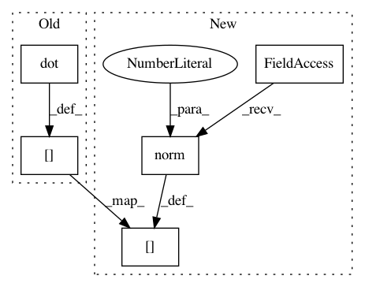

953cd54eff33bf1a77870044e4c9bfdf320e889d,geomstats/hypersphere.py,Hypersphere,intrinsic_to_extrinsic_coords,#Hypersphere#Any#,76
Before Change
point_extrinsic = np.zeros(dimension + 1, "float")
point_extrinsic[1: dimension + 1] = point_intrinsic[0: dimension]
point_extrinsic[0] = np.sqrt(1. - np.dot(point_intrinsic,
point_intrinsic))
assert self.belongs(point_extrinsic)
return point_extrinsic
After Change
point_extrinsic = np.zeros((n_points, dimension + 1))
point_extrinsic[:, 1: dimension + 1] = point_intrinsic[:, 0: dimension]
point_extrinsic[:, 0] = np.sqrt(1. - np.linalg.norm(
point_intrinsic,
axis=1) ** 2)
assert np.all(self.belongs(point_extrinsic))
assert point_extrinsic.ndim == 2, point_extrinsic.ndim
In pattern: SUPERPATTERN
Frequency: 3
Non-data size: 5
Instances
Project Name: geomstats/geomstats
Commit Name: 953cd54eff33bf1a77870044e4c9bfdf320e889d
Time: 2018-02-11
Author: ninamio78@gmail.com
File Name: geomstats/hypersphere.py
Class Name: Hypersphere
Method Name: intrinsic_to_extrinsic_coords
Project Name: mne-tools/mne-python
Commit Name: 880f617b17e02e166a3aebb3b54d9819171b0bbe
Time: 2020-06-07
Author: aprockhill206@gmail.com
File Name: mne/preprocessing/_csd.py
Class Name:
Method Name: compute_current_source_density
Project Name: geomstats/geomstats
Commit Name: 39caa436b0249d79ebec385a08b891f0c3e4edbb
Time: 2018-02-11
Author: ninamio78@gmail.com
File Name: geomstats/hyperbolic_space.py
Class Name: HyperbolicSpace
Method Name: intrinsic_to_extrinsic_coords